MAX デイライト
バージョン3.1.3の新機能
バージョン 3.1.1 の新機能
バージョン 3.0.7 の新機能
バージョン 3.0 は大幅に強化され、月面データの統合、14 個の新しいグラフィック データ パネル、および 100 を超える改善点が特徴です。 特に、以前のバージョンと比べて 3 倍高い電力効率を実現しています。
下にスクロールして、14 個の新しいデータ パネルをそれぞれ表示します。 アプリを使用するとき、任意のパネルをタップして追加機能にアクセスします。
 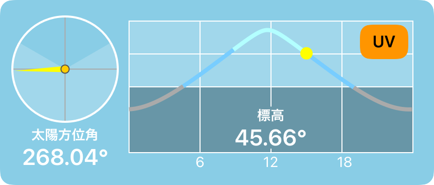
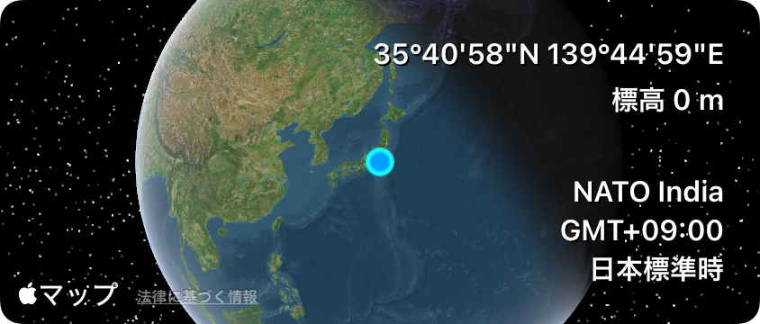
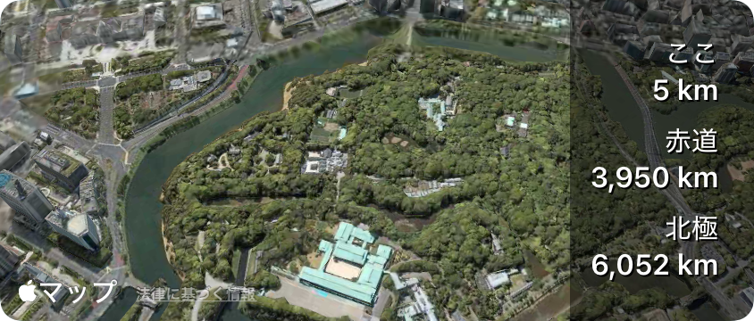
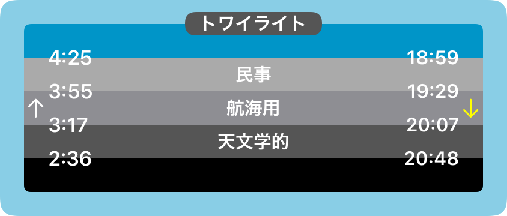
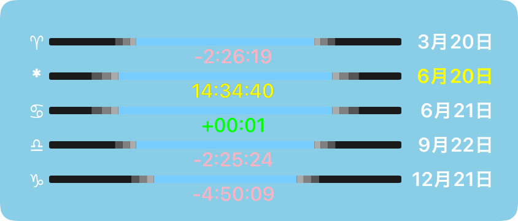
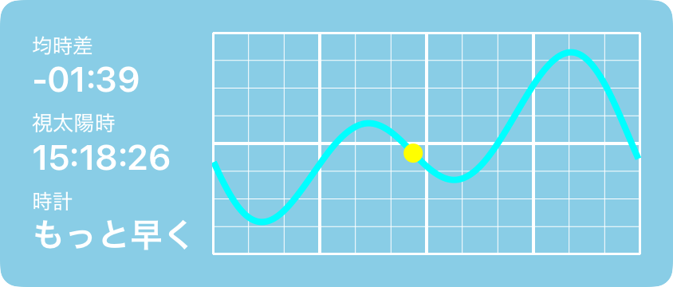
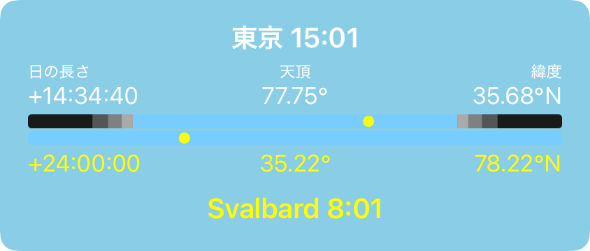
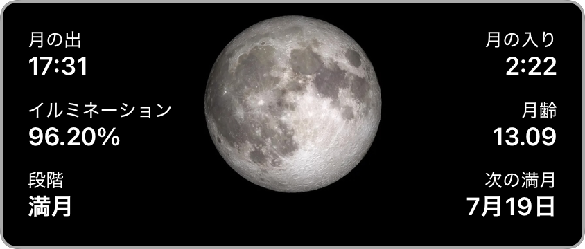
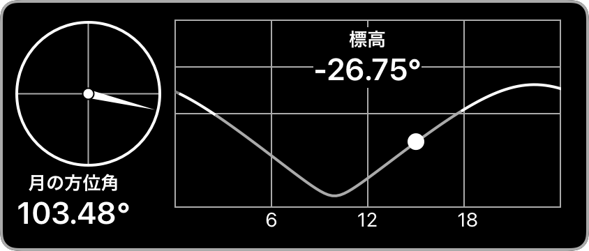
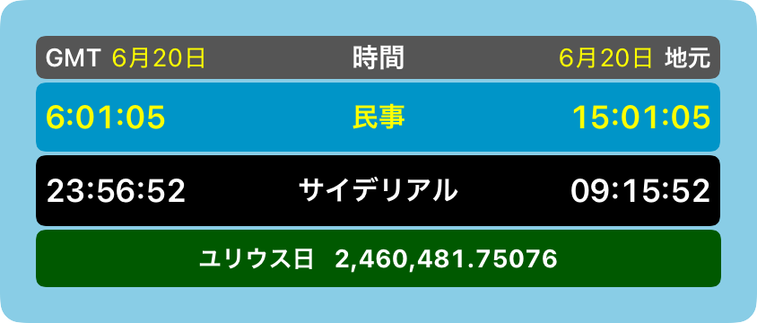
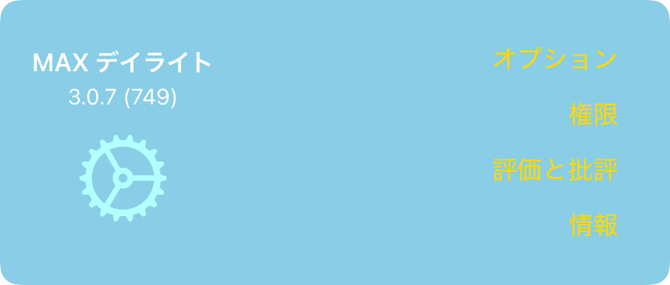
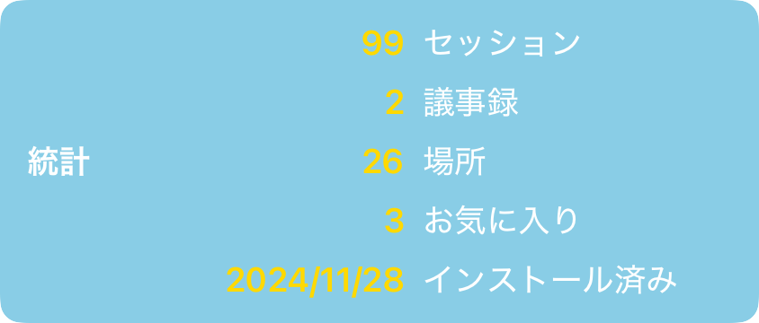
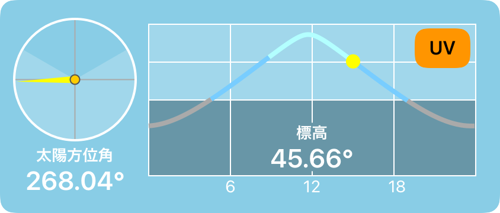
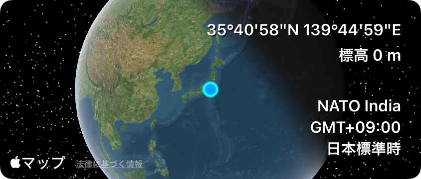
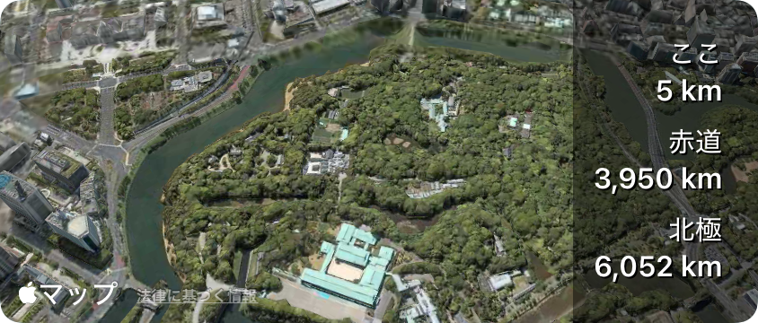
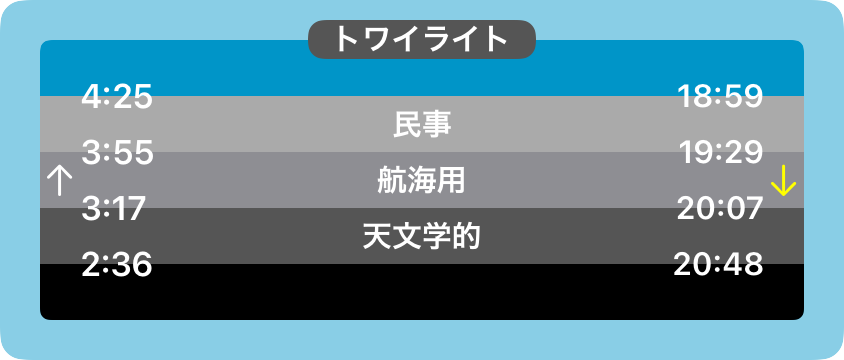
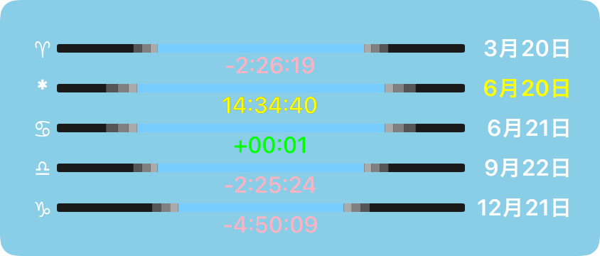
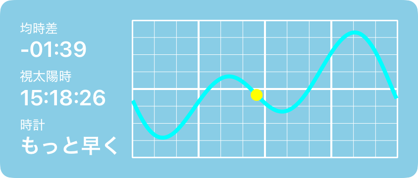
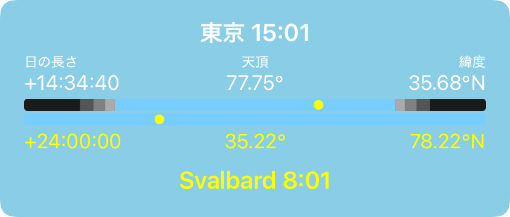
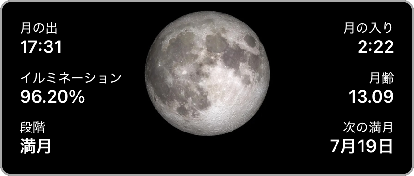
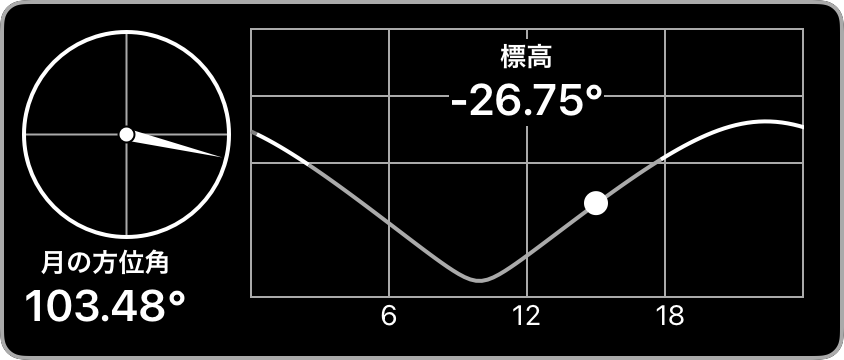
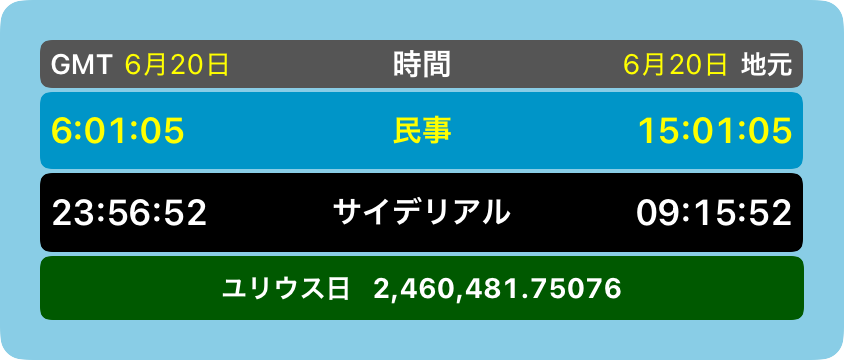
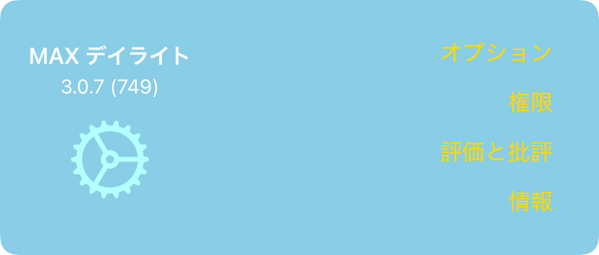
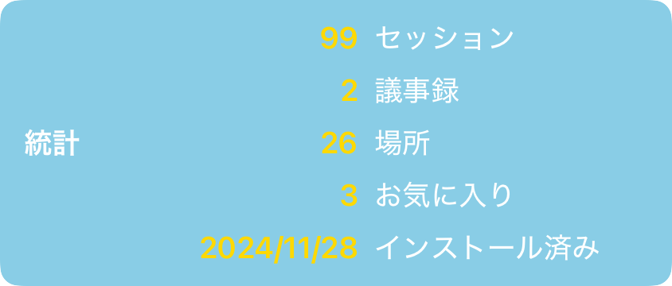
サンパネル
日の出、正午、日の入り、日の長さ、前日からの変化を表示します。 タップして別の日付と時刻を探索します。
太陽高度パネル
太陽の高度と方位を表示します。 タップして別の日付と時刻を探索します。
位置パネル
場所、標高、タイムゾーンの情報を表示します。 タップして地図を表示し、さらに場所を保存します。
距離パネル
現在位置、赤道、最寄りの極までの距離を表示します。 タップして地図を表示し、さらに場所を保存します。
トワイライト パネル
トワイライトタイムを表示します。 タップして別の日付と時刻を探索します。
春分パネル
今日の日とともに、春分点と夏至の日の長さの情報を表示します。 タップして別の日付と時刻を探索します。
均時差パネル
日時計愛好家向けに、均時差に関する情報を表示します。 タップして別の日付と時刻を探索します。
比較パネル
2 つの場所の緯度、日長、太陽高度を比較します。 タップして別の日付と時刻を探索します。
ムーンパネル
月の出、月の入り、月相、照度を表示します。 タップして別の日付と時刻を探索します。
月面高度パネル
月の高度と方位を表示します。 タップして別の日付と時刻を探索します。
天文学パネル
GMT と現地時間、常用と恒星時、ユリウス日を表示します。タップしてさまざまな日付と時刻を探索します。
ムービーとレポート パネル
ムービーを作成したり、レポートを生成したりするためのボタンが表示されます。 タップしてムービーまたはレポートを作成および表示します。
通知パネル
設定した通知のステータスを表示します。 タップして通知を管理します。
設定パネル
オプション、権限、評価とレビュー、アプリ情報、プライバシー、サポートなどの設定を管理するためのボタンが表示されます。 タップしてオプションを選択し、権限を確認し、このアプリを評価してレビューし、アプリのバージョンやその他の情報を取得します。
統計パネル
アプリの使用状況に関するデータが表示されます。 タップして、このデータがどのように非公開に保たれるかを確認してください。
履歴パネル
アプリで最近訪れた場所を表示します。